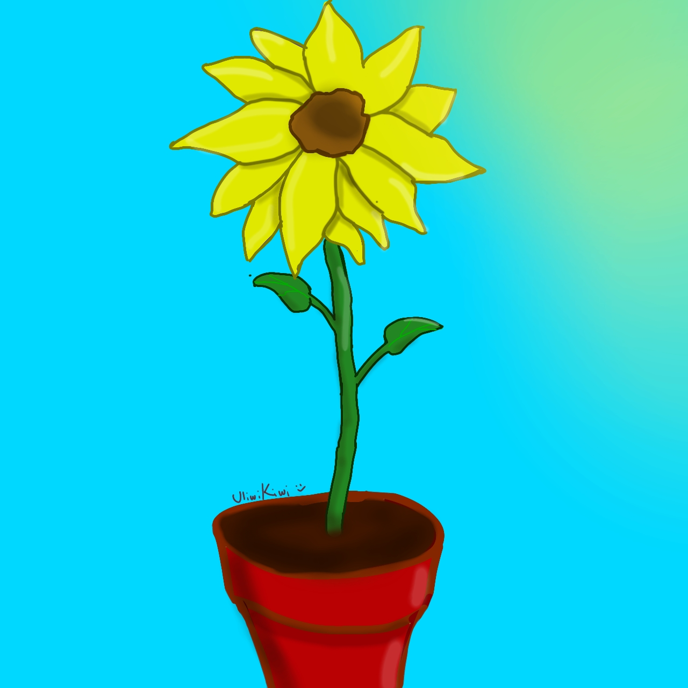
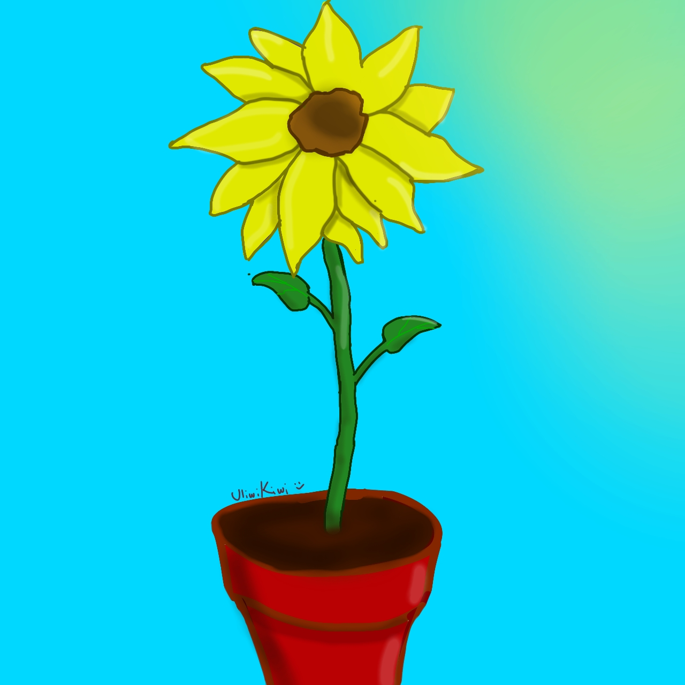

Mejor tarde que nunca c:
Fue divertido hacer esto a decir verdad, y siento que valió la pena aprender algo de programación para hacer esta clase de cosas, en fin.
Click aquí.
Timelapse del dibujo.
Fue divertido hacer esto a decir verdad, y siento que valió la pena aprender algo de programación para hacer esta clase de cosas, en fin.
Timelapse del dibujo.